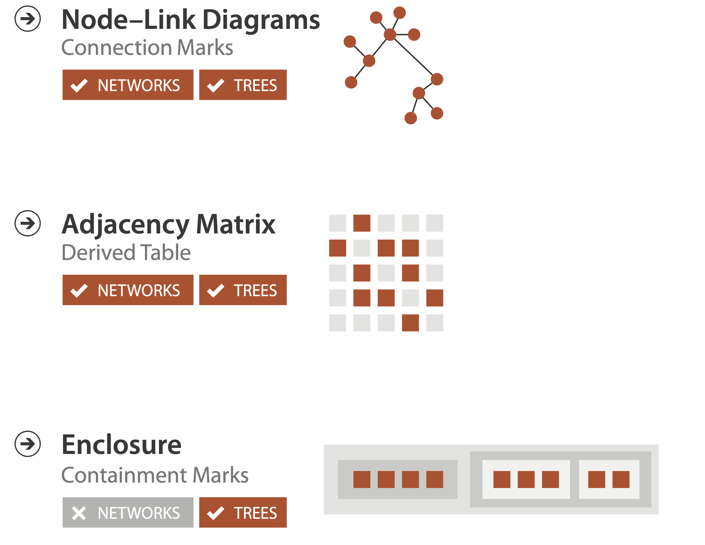
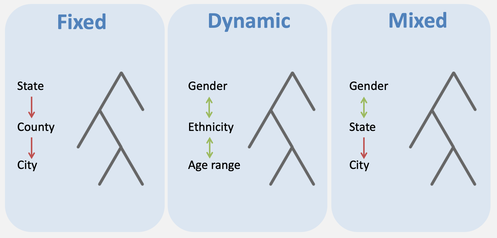

Visualizing Networks and Trees
MIDS W209: Information Visualization
John Alexis Guerra Gómez | john.guerra[at]gmail.com | @duto_guerra
https://johnguerra.co/lectures/MIDS_W209_Information_Visualization/08_Networks_and_Trees/
https://johnguerra.co/lectures/MIDS_W209_Information_Visualization/08_Networks_and_Trees/

Partially based on slides from Tamara Munzner
Arrange networks and trees
What we are going to learn
Networks: force simulations
Idiom: force-directed placement
- visual encoding
- link connection marks, node point marks
- considerations
- spatial position: no meaning directly encoded
- left free to minimize crossings
- proximity semantics?
- sometimes meaningful
- sometimes arbitrary, artifact of layout algorithm
- tension with length
- long edges more visually salient than short
- spatial position: no meaning directly encoded
- tasks
- explore topology; locate paths, clusters
- scalability
- node/edge density E < 4N
Idiom: sfdp (multi-level force-directed placement)
- data
- original: network
- derived: cluster hierarchy atop it
- considerations
- better algorithm for same encoding technique
- same: fundamental use of space
- hierarchy used for algorithm speed/quality but not shown explicitly
- (more on algorithm vs encoding in afternoon)
- scalability
- nodes, edges: 1K-10K
- hairball problem eventually hits
Force Directed Layout
Use the force!
Beeswarm plot
Collision Detection
Force in a Box
Idiom: adjacency matrix view
- data: network
- transform into same data/encoding as heatmap
- derived data: table from network
- 1 quant attrib
- weighted edge between nodes
- 2 categ attribs: node list x 2
- visual encoding
- cell shows presence/absence of edge
- tasks:
- Identify clusters (topology)
- Summarize Topology/Distribution
- scalability
- 1K nodes, 1M edges
Adjacency Matrix
Connection vs. adjacency comparison
- adjacency matrix strengths
- predictability, scalability, supports reordering
- some topology tasks trainable
- node-link diagram strengths
- topology understanding, path tracing
- intuitive, no training needed
- empirical study
- node-link best for small networks
- matrix best for large networks
- if tasks don’t involve topological structure!
Networks: Other Idioms
Chord Diagram
- Data: Networks (small # of nodes)
- Tasks: Summarize connections. Identify highest degree
- Considerations: Usually good for origin -> destination

Edge Bundling
- Data: Networks
- Tasks: Summarize common connections.
- Considerations:
- Reduces cluttering
- Requires computing time
- Works with any link based idiom

Arc Diagram
- Data: Networks (few nodes)
- Tasks: Summarize common connections.
- Considerations:
- Nodes order matter
- Better with highly clustered data
Arc Diagram
Hive Plots
Semantic Substrates
- Data: Networks with many edges
- Task: Summarize distribution of non network attribs
- Considerations:
- Easier to understand
- Scale well
- Edges on demand work best

Networks Extras
Network Analysis Metrics
- Connections
- Distribution
- Segmentation
Use them as derived attributes
Tools
Trees
Tree Definition
- Set of nodes and links that express the parent-to-child relationship. Where each node:
- Is uniquely labeled in the tree.
- Contains one or more numeric variables with values over time.
- Contains one or more categorical attributes that may have more than one value.
Types of trees
How are trees stored
- JSON file
- GraphML file
- Table
- Multiple attributes define hierarchy (e.g. State, City, Neighborhood)
- One attribute defines hierarchy with a separator (e.g. California/San Francisco/Presidio)
- One attribute defines parent id
Treemap from table
https://observablehq.com/@john-guerra/treemap-from-tableTrees: Node-link
Idiom: radial node-link tree
- data
- tree
- encoding
- link connection marks
- point node marks
- radial axis orientation
- angular proximity: siblings
- distance from center: depth in tree
- tasks
- understanding topology, following paths
- scalability
- 1K - 10K nodes
Radial Tree
Dendogram
Cluster Dendograms Radial
- Data: Trees
- Tasks: Summarize common connections.
- Considerations:
- Harder to read
- Better space usage
Phylogenetic Trees
- Data: Tree of Life
- Tasks: Summarize common connections. Identify Clusters.
- Considerations:
- Harder to read
- Also works with other clusters data

Cluster Dendograms Cartesian
Force Directed Tree
Collapsible Tree
- Data: Tree/Network
- Tasks: Navigate connections. Locate nodes
- Considerations:
- Great for larger datasets
SpaceTree
SpaceTree
Degree of Interest Tree
Trees: Containment
Idiom: treemap
- data
- tree
- 1 quant attrib at leaf nodes
- encoding
- area containment marks for hierarchical structure
- rectilinear orientation
- area encodes quant attrib
- tasks
- query attribute at leaf nodes
- scalability
- 1M leaf nodes
Link marks: Connection and containment
- marks as links (vs. nodes)
- common case in network drawing
- 1D case: connection
- ex: all node-link diagrams
- emphasizes topology, path tracing
- networks and trees
- 2D case: containment
- ex: all treemap variants
- emphasizes attribute values at leaves (size coding)
- only trees
TreeMap
TreeMap with parent labels
Icicle Tree
- Data: Tree
- Tasks: Summarize values/hierarchy. Navigate links
- Considerations:
- Uses more space than the treemap
- Better for labels
Icicle Tree
- Data: Tree
- Tasks: Summarize values/hierarchy. Navigate links. Compare values in leaves
- Considerations:
- Careful.small with small edges

Sunburst Tree
- Data: Tree
- Tasks: Summarize values/hierarchy. Navigate links
- Considerations:
- Radial values are confusing
- Fancy yet difficul.smallt animation
Radial Treemap
Kickstarter Projects
Tree drawing idioms comparison
- data shown
- link relationships
- tree depth
- sibling order
- design choices
- connection vs containment link marks
- rectilinear vs radial layout
- spatial position channels
- considerations
- redundant? arbitrary?
- information density?
- avoid wasting space